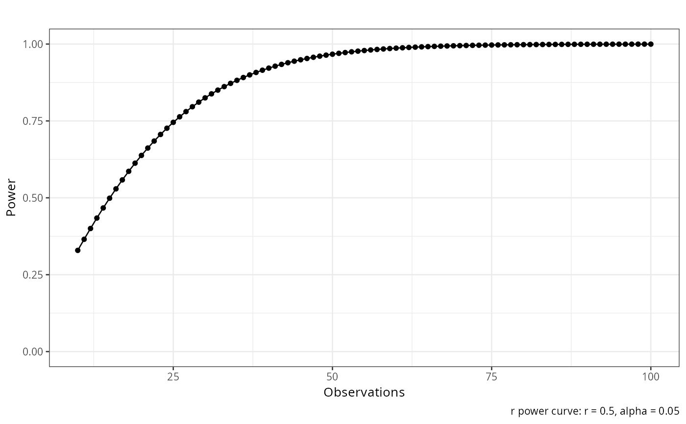

Compute r power curve
Usage
compute_power_r(
n = 100,
r = NULL,
sig.level = 0.05,
alternative = c("two.sided", "less", "greater"),
title = "",
base_size = 10
)Examples
compute_power_r(n=100,r=.5,sig.level=.05,alternative=c("two.sided"))
#> $plot

#>
#> $power_table
#> n r p power alternative method
#> 1 10 0.5 0.05 0.3290749 two.sided approximate correlation power calculation (arctangh transformation)
#> 2 11 0.5 0.05 0.3650995 two.sided approximate correlation power calculation (arctangh transformation)
#> 3 12 0.5 0.05 0.4001745 two.sided approximate correlation power calculation (arctangh transformation)
#> 4 13 0.5 0.05 0.4341885 two.sided approximate correlation power calculation (arctangh transformation)
#> 5 14 0.5 0.05 0.4670576 two.sided approximate correlation power calculation (arctangh transformation)
#> 6 15 0.5 0.05 0.4987194 two.sided approximate correlation power calculation (arctangh transformation)
#> 7 16 0.5 0.05 0.5291299 two.sided approximate correlation power calculation (arctangh transformation)
#> 8 17 0.5 0.05 0.5582604 two.sided approximate correlation power calculation (arctangh transformation)
#> 9 18 0.5 0.05 0.5860955 two.sided approximate correlation power calculation (arctangh transformation)
#> 10 19 0.5 0.05 0.6126316 two.sided approximate correlation power calculation (arctangh transformation)
#> 11 20 0.5 0.05 0.6378746 two.sided approximate correlation power calculation (arctangh transformation)
#> 12 21 0.5 0.05 0.6618391 two.sided approximate correlation power calculation (arctangh transformation)
#> 13 22 0.5 0.05 0.6845465 two.sided approximate correlation power calculation (arctangh transformation)
#> 14 23 0.5 0.05 0.7060241 two.sided approximate correlation power calculation (arctangh transformation)
#> 15 24 0.5 0.05 0.7263042 two.sided approximate correlation power calculation (arctangh transformation)
#> 16 25 0.5 0.05 0.7454228 two.sided approximate correlation power calculation (arctangh transformation)
#> 17 26 0.5 0.05 0.7634191 two.sided approximate correlation power calculation (arctangh transformation)
#> 18 27 0.5 0.05 0.7803344 two.sided approximate correlation power calculation (arctangh transformation)
#> 19 28 0.5 0.05 0.7962117 two.sided approximate correlation power calculation (arctangh transformation)
#> 20 29 0.5 0.05 0.8110953 two.sided approximate correlation power calculation (arctangh transformation)
#> 21 30 0.5 0.05 0.8250298 two.sided approximate correlation power calculation (arctangh transformation)
#> 22 31 0.5 0.05 0.8380602 two.sided approximate correlation power calculation (arctangh transformation)
#> 23 32 0.5 0.05 0.8502310 two.sided approximate correlation power calculation (arctangh transformation)
#> 24 33 0.5 0.05 0.8615866 two.sided approximate correlation power calculation (arctangh transformation)
#> 25 34 0.5 0.05 0.8721704 two.sided approximate correlation power calculation (arctangh transformation)
#> 26 35 0.5 0.05 0.8820248 two.sided approximate correlation power calculation (arctangh transformation)
#> 27 36 0.5 0.05 0.8911911 two.sided approximate correlation power calculation (arctangh transformation)
#> 28 37 0.5 0.05 0.8997094 two.sided approximate correlation power calculation (arctangh transformation)
#> 29 38 0.5 0.05 0.9076184 two.sided approximate correlation power calculation (arctangh transformation)
#> 30 39 0.5 0.05 0.9149551 two.sided approximate correlation power calculation (arctangh transformation)
#> 31 40 0.5 0.05 0.9217554 two.sided approximate correlation power calculation (arctangh transformation)
#> 32 41 0.5 0.05 0.9280532 two.sided approximate correlation power calculation (arctangh transformation)
#> 33 42 0.5 0.05 0.9338812 two.sided approximate correlation power calculation (arctangh transformation)
#> 34 43 0.5 0.05 0.9392703 two.sided approximate correlation power calculation (arctangh transformation)
#> 35 44 0.5 0.05 0.9442498 two.sided approximate correlation power calculation (arctangh transformation)
#> 36 45 0.5 0.05 0.9488476 two.sided approximate correlation power calculation (arctangh transformation)
#> 37 46 0.5 0.05 0.9530900 two.sided approximate correlation power calculation (arctangh transformation)
#> 38 47 0.5 0.05 0.9570019 two.sided approximate correlation power calculation (arctangh transformation)
#> 39 48 0.5 0.05 0.9606066 two.sided approximate correlation power calculation (arctangh transformation)
#> 40 49 0.5 0.05 0.9639262 two.sided approximate correlation power calculation (arctangh transformation)
#> 41 50 0.5 0.05 0.9669813 two.sided approximate correlation power calculation (arctangh transformation)
#> 42 51 0.5 0.05 0.9697914 two.sided approximate correlation power calculation (arctangh transformation)
#> 43 52 0.5 0.05 0.9723745 two.sided approximate correlation power calculation (arctangh transformation)
#> 44 53 0.5 0.05 0.9747477 two.sided approximate correlation power calculation (arctangh transformation)
#> 45 54 0.5 0.05 0.9769267 two.sided approximate correlation power calculation (arctangh transformation)
#> 46 55 0.5 0.05 0.9789265 two.sided approximate correlation power calculation (arctangh transformation)
#> 47 56 0.5 0.05 0.9807608 two.sided approximate correlation power calculation (arctangh transformation)
#> 48 57 0.5 0.05 0.9824424 two.sided approximate correlation power calculation (arctangh transformation)
#> 49 58 0.5 0.05 0.9839833 two.sided approximate correlation power calculation (arctangh transformation)
#> 50 59 0.5 0.05 0.9853945 two.sided approximate correlation power calculation (arctangh transformation)
#> 51 60 0.5 0.05 0.9866864 two.sided approximate correlation power calculation (arctangh transformation)
#> 52 61 0.5 0.05 0.9878685 two.sided approximate correlation power calculation (arctangh transformation)
#> 53 62 0.5 0.05 0.9889496 two.sided approximate correlation power calculation (arctangh transformation)
#> 54 63 0.5 0.05 0.9899379 two.sided approximate correlation power calculation (arctangh transformation)
#> 55 64 0.5 0.05 0.9908411 two.sided approximate correlation power calculation (arctangh transformation)
#> 56 65 0.5 0.05 0.9916660 two.sided approximate correlation power calculation (arctangh transformation)
#> 57 66 0.5 0.05 0.9924191 two.sided approximate correlation power calculation (arctangh transformation)
#> 58 67 0.5 0.05 0.9931065 two.sided approximate correlation power calculation (arctangh transformation)
#> 59 68 0.5 0.05 0.9937335 two.sided approximate correlation power calculation (arctangh transformation)
#> 60 69 0.5 0.05 0.9943053 two.sided approximate correlation power calculation (arctangh transformation)
#> 61 70 0.5 0.05 0.9948266 two.sided approximate correlation power calculation (arctangh transformation)
#> 62 71 0.5 0.05 0.9953016 two.sided approximate correlation power calculation (arctangh transformation)
#> 63 72 0.5 0.05 0.9957342 two.sided approximate correlation power calculation (arctangh transformation)
#> 64 73 0.5 0.05 0.9961282 two.sided approximate correlation power calculation (arctangh transformation)
#> 65 74 0.5 0.05 0.9964868 two.sided approximate correlation power calculation (arctangh transformation)
#> 66 75 0.5 0.05 0.9968131 two.sided approximate correlation power calculation (arctangh transformation)
#> 67 76 0.5 0.05 0.9971099 two.sided approximate correlation power calculation (arctangh transformation)
#> 68 77 0.5 0.05 0.9973798 two.sided approximate correlation power calculation (arctangh transformation)
#> 69 78 0.5 0.05 0.9976252 two.sided approximate correlation power calculation (arctangh transformation)
#> 70 79 0.5 0.05 0.9978481 two.sided approximate correlation power calculation (arctangh transformation)
#> 71 80 0.5 0.05 0.9980507 two.sided approximate correlation power calculation (arctangh transformation)
#> 72 81 0.5 0.05 0.9982346 two.sided approximate correlation power calculation (arctangh transformation)
#> 73 82 0.5 0.05 0.9984016 two.sided approximate correlation power calculation (arctangh transformation)
#> 74 83 0.5 0.05 0.9985531 two.sided approximate correlation power calculation (arctangh transformation)
#> 75 84 0.5 0.05 0.9986907 two.sided approximate correlation power calculation (arctangh transformation)
#> 76 85 0.5 0.05 0.9988154 two.sided approximate correlation power calculation (arctangh transformation)
#> 77 86 0.5 0.05 0.9989285 two.sided approximate correlation power calculation (arctangh transformation)
#> 78 87 0.5 0.05 0.9990311 two.sided approximate correlation power calculation (arctangh transformation)
#> 79 88 0.5 0.05 0.9991240 two.sided approximate correlation power calculation (arctangh transformation)
#> 80 89 0.5 0.05 0.9992082 two.sided approximate correlation power calculation (arctangh transformation)
#> 81 90 0.5 0.05 0.9992845 two.sided approximate correlation power calculation (arctangh transformation)
#> 82 91 0.5 0.05 0.9993535 two.sided approximate correlation power calculation (arctangh transformation)
#> 83 92 0.5 0.05 0.9994161 two.sided approximate correlation power calculation (arctangh transformation)
#> 84 93 0.5 0.05 0.9994727 two.sided approximate correlation power calculation (arctangh transformation)
#> 85 94 0.5 0.05 0.9995239 two.sided approximate correlation power calculation (arctangh transformation)
#> 86 95 0.5 0.05 0.9995702 two.sided approximate correlation power calculation (arctangh transformation)
#> 87 96 0.5 0.05 0.9996121 two.sided approximate correlation power calculation (arctangh transformation)
#> 88 97 0.5 0.05 0.9996500 two.sided approximate correlation power calculation (arctangh transformation)
#> 89 98 0.5 0.05 0.9996843 two.sided approximate correlation power calculation (arctangh transformation)
#> 90 99 0.5 0.05 0.9997152 two.sided approximate correlation power calculation (arctangh transformation)
#> 91 100 0.5 0.05 0.9997432 two.sided approximate correlation power calculation (arctangh transformation)
#>